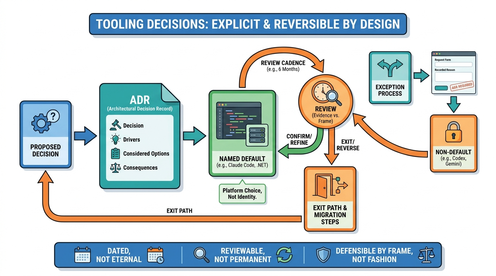

Organisation
Organisation Principle: Tooling Decisions Are Explicit and Reversible

Inspired by Organization's AI tooling decision and Dan McKinley's Choose Boring Technology
Organisation

Inspired by Organization's AI tooling decision and Dan McKinley's Choose Boring Technology